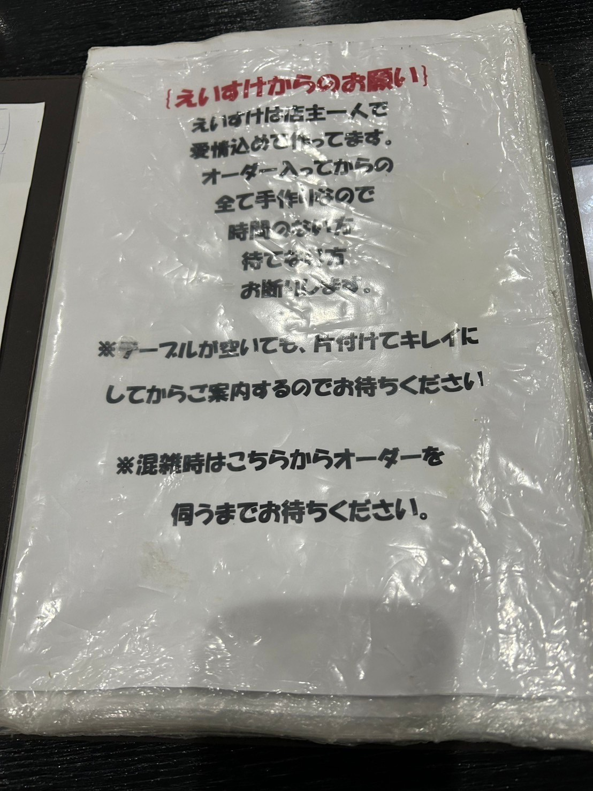
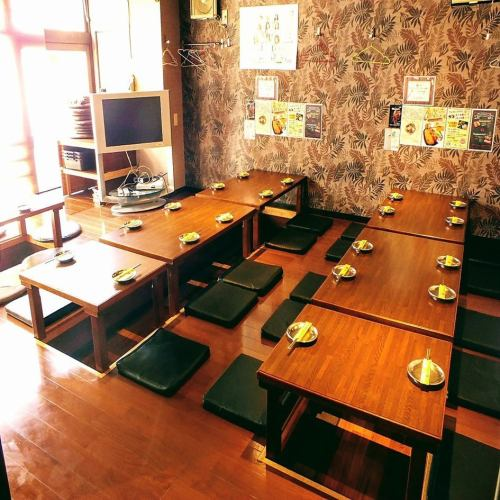
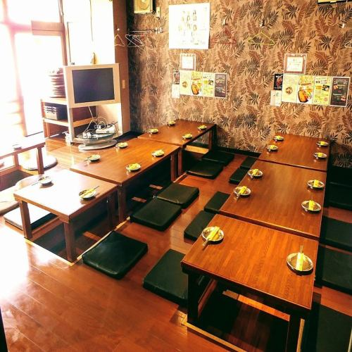

今回は私達の地元である、魅力度ランキング46位の埼玉県のグルメを紹介します。
１.和食
過去何度かテレビのグルメ番組で紹介されたことがある人気店です。店内は純和風で落ち着いた雰囲気で、おもむきのあるお店です。
普段日常的に食べているうどんとは異なり、滑らかでしなやかな食感が特徴です。
川幅みそ煮込みうどん（９９０円）はメディアでもたびたび取り上げられる人気メニューです。川幅２５３７うどん（８９０円）は日本一の川幅２５３７メートルにかけて、２は肉、５は卵、３は水菜、７はナスと、それぞれの数字にちなんだ食材を使用しています。


埼玉県秩父地方の名物「わらじカツ丼」は、その名の通り履物のわらじのような大きさのトンカツが特徴的な郷土料理です。
丼からはみ出すほどの巨大なカツは、薄く伸ばされたロース肉を使用し、サクサクの衣で揚げられています。甘辛い醤油ベースのタレをくぐらせたカツは、ご飯との相性が抜群で、ボリューム満点の一品となっています。
秩父市にはわらじカツ丼を提供しているお店が数多くあります。今回紹介するのは西武秩父駅の「秩父わらじかつ亭」です。このお店のわらじカツ丼はかつ一枚一枚がとても大きく、程よい薄さで衣もサクサク、キャベツやお米とのバランスも良い、大満足な一品となっています。
また、「祭りの湯」と併設されているフードコートの中にあるため、一緒に温泉も楽しむことができます。
実際に行ってみた感想
秩父わらじかつ亭には12時ごろにお伺いしました
前述した通り、このお店は「祭りの湯」という温泉施設内のフードコートに併設されています。発券機で食券を購入することでき、カツの枚数やカツカレーにするかどうかなども選ぶことができます。また、漬物や味噌汁もセットでついてきます
今回はスタンダードなわらじかつ丼を注文しました。普通のカツ丼よりもずっとインパクトがあり、衣もサクサクでジューシーなので最後まで飽きずに食べ続けることができました。フードコートにはわらじかつ丼だけでなく、秩父名物の味噌ポテトや炙り豚味噌丼など様々なグルメを楽しむことができるのでこちらもおすすめとなっています。
わらじかつを提供しているお店は秩父のあらゆる場所にあるのでぜひ、自分にあった味を見つけてください。
２.洋食
（１）Cafeレストラン ホット・ベリー 朝産み卵のオムライス
アメリカンカントリーを思わせる店内で、BGMはビートルズを中心に70~80年代の曲が流れています。
このお店のおすすめ料理は「朝産み卵のオムライス」です。狭山の養鶏場から毎朝産みたてを仕入れており、味の濃い有精卵をたっぷり３つ使ったオムライスになっています。
食後はコーヒーを楽しんでもらいたいと、コーヒーの味にもこだわっているそうです。ランチやティータイムにぜひ行ってみてください。


昼・夜はいつも行列ができている人気の洋食店です。こちらでは、ビーフカツレツやハンバーグ、オムライスなどの、「ザ・洋食店」というメニューがズラリと並んでいます。
このお店の名物であり、圧倒的な人気を誇るのが、「ビーフカツレツ定食」です。
この「ビーフカツレツ定食」では「デミグラスソース」と「えいすけオリジナルソース」の二つのソースから選ぶことができます。特に「えいすけオリジナルソース」は強い酸味とガーリックの香りが口いっぱいに広がり、また食べたくなるやみつきの一品です。

実際に行ってみた感想
えいすけには19時頃に行かせていただきました。
このお店の特徴は夫婦２人で運営しているということです。そのため、お店では出来立ての手作りのをいただくことができ、お店と地域住民の温かいやりとりをみることができます。しかし、２人で営んでいる分提供スピードはあまり早くなく、今回は提供まで一時間ほどかかりました。ですので、待つことが苦手の方には向いていないかもしれません。ですが、その分味は絶品となっています。
ビーフカツレツ定食はとてもまろやかで柔らかく、箸で挟んだだけでもちぎれてしまいそうなほどです。あまり脂っこくなく、口当たりはステーキに似たものを感じました。ビーフカツレツ定食は2000円ほどで少し高めな値段ですがそれに見合った、とても美味しい料理でした。ビーフカツレツ定食の他に安めのメニューもあり、そちらもクオリティーが高いので高いと感じる方もぜひ足を運んでみてください。

３.韓国料理
新越谷駅西口から徒歩2分のところにある韓国料理店です。このお店ではサムギョプサルや韓国式チキンなど、本場の味を再現した韓国料理を楽しむことができます。
お酒やおつまみなども充実しており、飲み放題のメニューもあるため、友人との食事や女子会、デートなどの様々なシチュエーションで利用できるお店となっています。また、家で食べたい人向けにテイクアウトも行っています。
（２）TonTonオンギー
大宮駅東口から徒歩3分。サムギョプサルとチーズタッカルビがおすすめのお店です。
先程紹介したプルタッチキンは飲み放題のみでしたが、このお店は食べ放題か飲み放題か選ぶことができるため、好みに合わせて楽しむことができます。食べ放題以外にもチヂミやビビンバ、プルコギなど、単品メニューも充実しています。
また、このお店は2～4名、8～10名の個室も用意されており、周りを気にせず楽しむことができます。20～30名の貸し切りフロアもあるため宴会などにもピッタリです。
 

４.中華料理
（１）大味
埼玉県蕨市にある大人気中華料理店です。席数が少ないので並ぶことが多いみたいです。
このお店は人気テレビ番組にも紹介されたことがあり、とにかく量が多く、値段が安いことが話題になりました。このお店の看板料理「海老チャーハン」はYahoo!ニュースで「埼玉県の炒飯名店ランキング」大味が１位に選ばれました。
さらに、店主はホテルニューオータニで修行をしていたということなので、美味しいことは間違いないです。
実際に行ってみた感想
大味には18時頃に行かせていただきました。
前述した通りこのお店は量が多いことが売りとなっています。そのため、お店ではタッパーを持参して残りをお持ち帰りすることができるようになっています。そのため今回は私たちもタッパーを持参し、店舗に赴きました。
今回は海老チャーハンとエビチリを注文したのですが、あまりの大きさに驚いてしまいました。曰く、このチャーハンはコンビニのおにぎり7～8個分らしく、取り皿で分けつつ食べるもののようですが私たちは一人一皿で頼んでしまいました。それに加えてワカメのスープもセットでついてくるのでとてもボリュームがありました。
しかし、量だけではなく、味もとてもクオリティーの高いものでした。チャーハンはパラパラで脂っこくないのでサクサク食べ進めることができ、海老はとてもプリプリでかつ、どっさりとのっているので満足するまで食事を堪能することができました。
結局一部タッパーで持ち帰ることとなってしまいましたが2日目でも味は落ちることなく、とても美味しかったです。ですがやはり、量が多いので胃袋の自信がない方はタッパーを持参するか半チャーハンなどにして量を減らすことをおすすめします。
（２）火鍋亭
火鍋亭は大宮駅からら徒歩5分の場所にある人気中華料理店であり、ラムと牛肉コースはその中でも１番人気のメニューです。 唐辛子や花椒などの中国から直輸入した様々な漢方を使い、秘伝のレシピで仕上げた薬膳火鍋は絶品です。 また、高級感のある店内にはロールカーテンで仕切りを設けたデーブル席や個室も完備しており、デートや 女子会にもよく使われているようです。 少しお値段は張ってしまいますが大宮駅周辺で本場の中華を食べたい方には 特におすすめです。
５.スイーツ
Cocoは大宮駅西口から歩いて16分。住宅街の一角にお店をかまえています。
Cocoは、コロナウイルスの影響が少しずつ落ち着き始めた2022年に開業。まだまだ新しいお店にも関わらず、Googleマップでは4.8の高評価を獲得しています。
大宮Cocoプリンは、2023-24年度のさいたま推奨土産品にも認定された人気商品です。舌触りはとってもなめらかで、口いっぱいに甘さが広がります。
別添えのカラメルを加えると、ガラッと味が変わって、一度で二通りの味を楽しむことができます。

実際に行ってみた感想
放課後、17時頃に伺いました。平日だったこともあり、とてもスムーズに購入することができました。また、店員さんも笑顔で接客してくださり、とても気分が良かったです！
今回、購入した商品は看板メニューである「大宮Cocoプリン」です！大きさは手のひらサイズで、別添えでカラメルがついてきました。
なめらかな食感に、程よい甘さかつ、卵が濃厚でとても美味しかったです！また、別添えのカラメルをかけることによってまた違った味も楽しめます！
駅からも徒歩で行くことができるので、大宮に行く際はぜひ立ち寄ってみてください！
全国でもわずか６軒しかない、天然氷の蔵元が営む専門店です。
昭和風な建物と、開放感あふれる庭園が特徴的です。
数あるかき氷メニューの中でも、一番の人気メニューは「蔵元秘伝みつ」です。
和三盆をじっくり煮詰めて作った秘伝のみつは上品な味わいで、天然氷本来の味を楽しむことができます。

実際に行ってみた感想
開店時間である10:00を目安に伺いました。
電車の都合もあり、開店より少し早くに着いてしまったのですが開店より少し早めに店内に入れていただきました。店内に入った後もわざわざ暖房の効いた席に案内していただいたり、かき氷の食べ方やおすすめについても丁寧に説明していただき、とても親切な接客だったと印象に残りました。
注文から数分後、注文が届きました。今回は阿佐美冷蔵秘伝の「蔵元秘伝みつ」をかけていただきました。普段お祭りで食べるようなかき氷よりもずっと氷がふわふわしていて、蜜もちょうど良い甘さでサクサク食べ進めることができ、これを食べれただけでも秩父に来て良かったと思えるほど。
それに加え、食後は無料で足湯に入ることができ、かき氷で冷えた体を温めることができるサービスもついています。冬に訪れたのでかき氷は体が冷えてしまうと考えていましたが、結果としては大満足の体験ができました！
６.まとめ
（１）要点・注意点
今回のグルメサイトでは埼玉県のグルメについて説明していきました。 営業時間があまり長くない店舗やかなりお値段が張ってしまう場合もあるので青色になっている文字から営業時間やアクセスについて調べることをおすすめします。特に秩父などの田舎にある店舗は電車の数も限られてくるのでご注意ください。
（２）感想・おすすめ
今回のサイト作成に当たって、実際にいくつかの店舗へと足を運びました。そのついでに秩父などへ旅行にいったのですが、秩父の自然は写真で見るよりも遥かに迫力があり、地方特有の雰囲気が広がっており感動しました。
この経験から、直接足を運ぶことの大切さを学ぶと同時に自分たちはまだまだ埼玉県について知らないんだということを思い知らされました。
今回は埼玉のグルメについての紹介でしたが今度は観光スポットやお土産についてのサイトも作成していきたいです。